demo_model(random)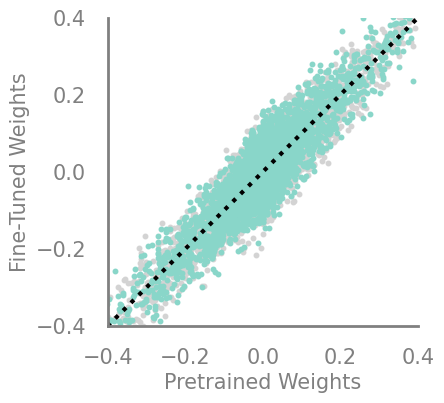
The criteria implemented come from this paper.
demo_model(random)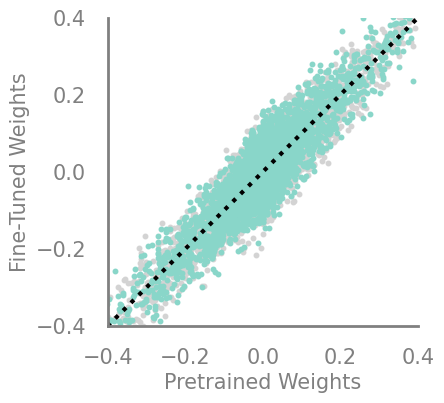
demo_model(large_final)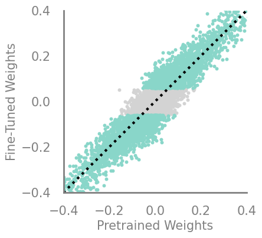
demo_model(squared_final)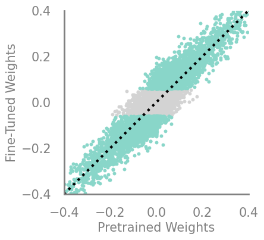
demo_model(small_final)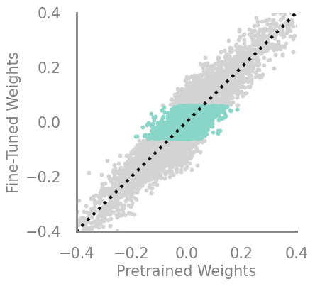
demo_model(large_init)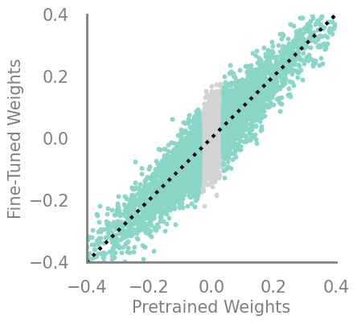
demo_model(small_init)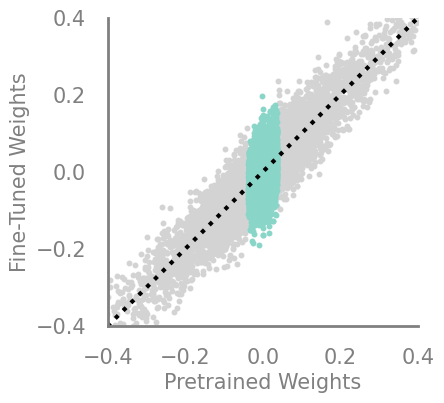
demo_model(large_init_large_final, 80)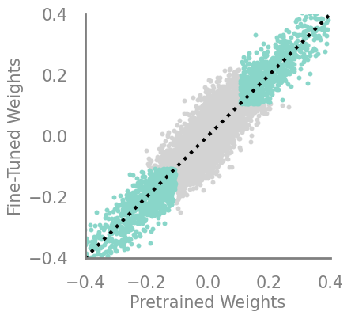
demo_model(small_init_small_final)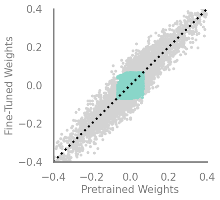
demo_model(magnitude_increase, 60)demo_model(movement)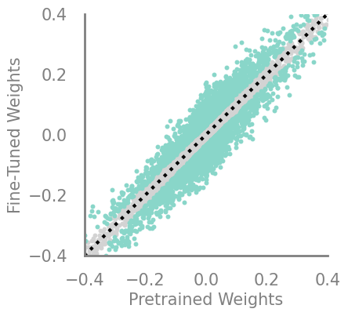
The following criteria use an updating value of the weights, i.e. the value from the previous iteration of training, instead of the initialization value to better capture the training dynamics.
demo_model(updating_magnitude_increase)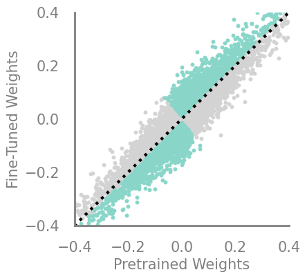
demo_model(updating_movement, 50)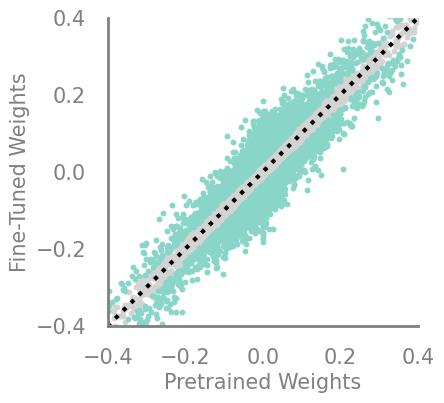
demo_model(movmag)
demo_model(updating_movmag)updating_magnitude_increase = Criteria(torch.abs, needs_update=True, output_f= lambda x,y: torch.abs(torch.sub(x,y)))
demo_model(updating_magnitude_increase)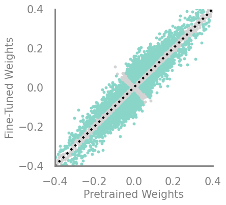
updating_magnitude_increase = Criteria(torch.abs, needs_update=True, output_f= lambda x,y: torch.sub(x,y))
demo_model(updating_magnitude_increase)
updating_magnitude_increase = Criteria(torch.square, needs_update=True, output_f= lambda x,y: torch.abs(torch.sub(x,y)))
demo_model(updating_magnitude_increase)updating_movmag = Criteria(noop, needs_update=True, output_f=lambda x,y: torch.abs(torch.mul(x, torch.sub(x,y))))
demo_model(updating_movmag)updating_movmag = Criteria(noop, needs_update=True, output_f=lambda x,y: torch.abs(torch.mul(torch.square(x), torch.sub(x,y))))
demo_model(updating_movmag)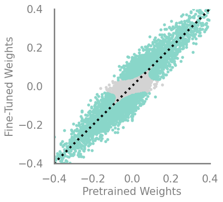
updating_movmag = Criteria(torch.square, needs_update=True, output_f=lambda x,y: torch.abs(torch.mul(x, torch.sub(x,y))))
#updating_movmag = Criteria(noop, needs_update=True, output_f=lambda x,y: torch.mul(x, torch.sub(x,y)))
demo_model(updating_movmag)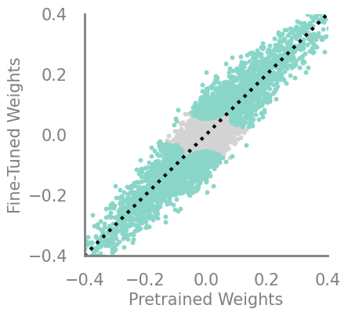
updating_movmag = Criteria(torch.abs, needs_update=True, output_f=lambda x,y: torch.abs(torch.mul(x, torch.sub(x,y))))
#updating_movmag = Criteria(noop, needs_update=True, output_f=lambda x,y: torch.mul(x, torch.sub(x,y)))
demo_model(updating_movmag, 30)updating_movmag = Criteria(torch.abs, needs_update=True, output_f=lambda x,y: torch.mul(x, torch.sub(x,y)))
demo_model(updating_movmag, 80)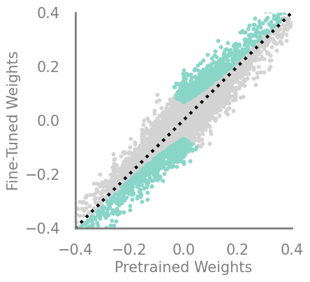
updating_movmag = Criteria(torch.square, needs_update=True, output_f=lambda x,y: torch.mul(x, torch.sub(x,y)))
demo_model(updating_movmag)updating_movmag = Criteria(noop, needs_update=True, output_f=lambda x,y: torch.mul(x, torch.sub(x,y)))
demo_model(updating_movmag)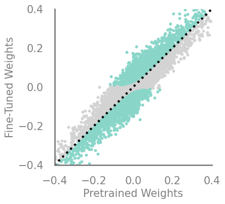
updating_movement = Criteria(noop, needs_update=True, output_f= lambda x,y: torch.abs(torch.sub(-x,y)))
demo_model(updating_movement, 50)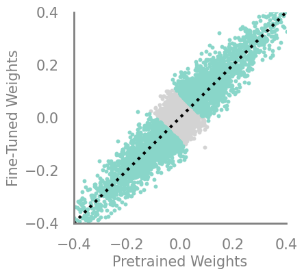
updating_movement = Criteria(torch.abs, needs_update=True, output_f= lambda x,y: torch.abs(torch.sub(-x,y)))
demo_model(updating_movement)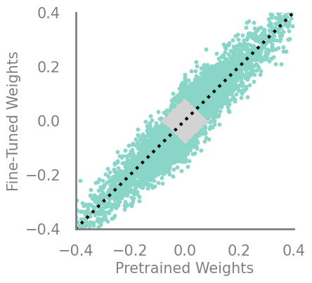
updating_movement = Criteria(torch.abs, needs_update=True, output_f= lambda x,y: torch.abs(torch.cosh(torch.sub(x,y))))
demo_model(updating_movement)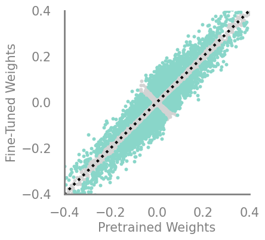
updating_movement = Criteria(torch.square, needs_update=True, output_f= lambda x,y: torch.abs(torch.sub(x,y)))
demo_model(updating_movement)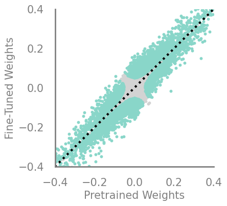
updating_movement = Criteria(noop, needs_update=True, output_f= lambda x,y: torch.sub(x,y))
demo_model(updating_movement)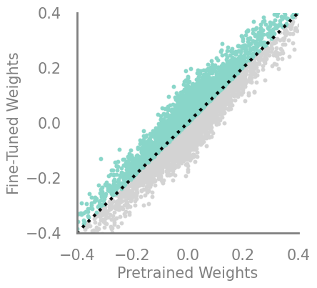
mine = partial(torch.pow, exponent=4)large_final = Criteria(torch.frac)
demo_model(large_final)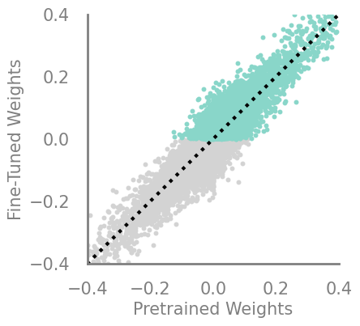